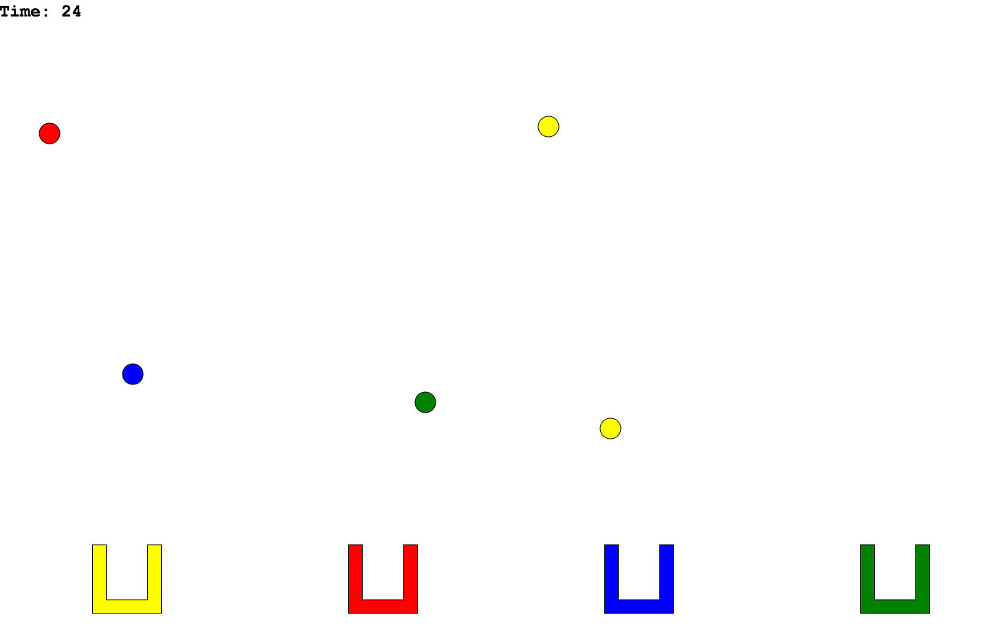
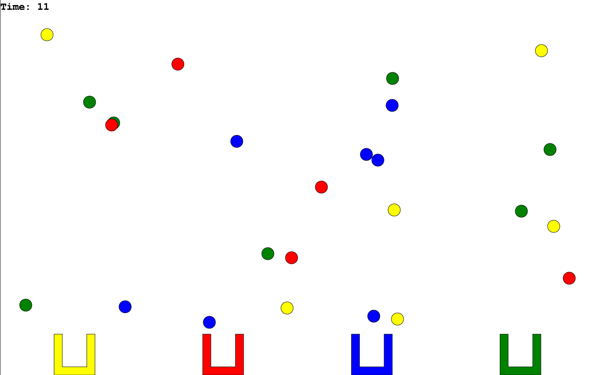
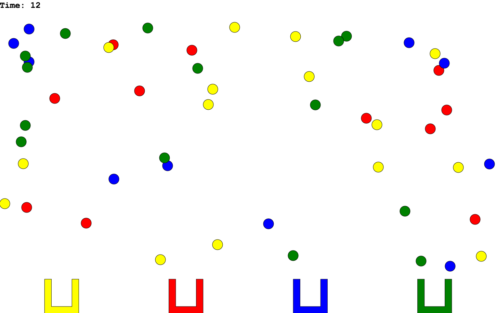

Buckets!
Buckets! is a quick and dirty sample game that will challenge your hand-eye coordination. See how fast you can sort the different circles on the canvas into their respective buckets using their colours as a guide. Challenge yourself by adding more circles through the configurable difficulty setting of the application.
Written in paper.js it is intended to show what is possible with some of the technologies that will be covered in this course. Paper.js hides a lot of the underlying complexities, but Buckets! itself shares the same essential structure as any video game. Namely, it contains a scene graph, user input management, game state tracking, and a game loop.
Screenshots!
  